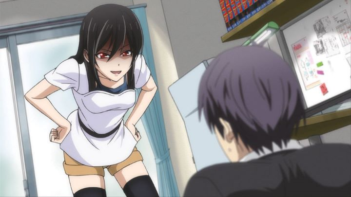

American anime distributor Sentai Filmworks has never been subtle with their packaging. "The Comic Artist & His Assistants" on DVD (and Bluray) has an image of four cute girls posing in bikinis. Believe it or not, this was not the reason I purchased the series. A comedy about a hard-working manga artist with a tendancy to get side-tracked, I figured the subject matter might be compelling to a comic artists and creatives, even if this type of subject has been covered elsewhere, in better manners (see "Shirobako").Unfortunately, "The Comic Artist & His Assistants" doesn't have particularly high asperations. Based on a comic of the same name, the anime is actually a short-form series, with each episode at about one-half the length of a typical 24-minute episode. That's about 12-14 minutes, and the follow-up OVA (included in the set) are even shorter, INCLUDING a full length opening and ending theme. The episodes still feel stretched, as each one is made up of a handful of vignettes, each likely a standalone joke in the comic, lasting a few pages each. There is barely a story to speak of.This type of format isn't bad for an anime that primarily tries to be a comedy, IF the jokes are funny. Unfortunately, "The Comic Artist" relies heavily on one joke, and it isn't in good taste: the lead character, Aito, is a published manga artist that writes an erotic romatic comedy. He loves womens' panties and underwear. Like most anime protagonists, he might be well-meaning, but he is undeniably a pervert. This causes his work to slowly suffer (lacking a proper plot), so his manager (an old friend from high school) and lead assistant continue to help him focus. Aito can't seem to help himself, however, constantly ending up in "accidental" situations, often on purpose.Sex comedies can be done well, but it's a fine line to avoid feeling icky. Aito's character doesn't come off well. He will occasionally ask to squeeze one of his assistant's breasts, or to have them pose in their underwear, for "research" and to improve his manga's quality. Initially not falling for the trick, the girls around him slowly give in, out of misplaced trust, or more often, out of pity. Being guilted into those types of situations... this should be an uncomfortable series for both men and women. Admittedly, the show does get a bit funnier as it passes. It improves when it focuses jokes on the other characters (as one-dimensional as they all are), ignoring Aito's fetishes. Remnents of a story peak out in Ashisu, his lead assistant, and her own struggle to write a successful manga independently. But there isn't enough to justify much praise, and despite the short runtime, feels like it could have been even shorter.Is it at least sexy? It has its moments, with a handful of surprisingly risque scenes tucked in-between mostly standard fare. But again, most of the scenes come out from situations that feel wrong, ruining the mood. One prime example is one of the OVA episodes, where a character's younger sister and a manga magazine editor, each appearing to be barely 10 years old, have a "sexy" competition by removing their underwear in plain view. "Funny" and "sexy" are overriden by those conflicting feelings, no longer simply being mediocre, but nearly offensive.The production values are understandably unambitious, affected by occasionally inconsistent and off-model drawings, and odd old-school mouth designs. But the character designs are a bit distinct, in that the female cast mostly consists of smaller-frames and smaller busts (even in the adults). The music is present, and catchy when it needs to be (the ending theme feels bizarrely melancholy, as if it was from a different show). There isn't an English dub, but the Japanese actor for Aito goes the extra mile, helping sell his reactions by speaking in a variety of tones, from naively chirpy, to horrified, to cool mentor. Really, the team behind the show can't be entirely blamed. And most of the characters are interesting and charming in different ways. Almost all of the problems stem from the lead at the center: Aito and his personality. He's incorrigible. He's disgusting. And as a fictional author creating work similar to countless other fan-service manga and anime... one can't help but wonder if there's any truth to the jokes, and whether there was ever a time when we really thought this type of humor was entertaining.
- "Ani" More reviews can be found at : https://2danicritic.github.io/ Previous review: review_The_Cat_Returns Next review: review_The_Disappearance_of_Haruhi_Suzumiya